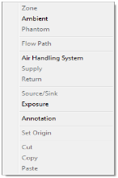

Drawing Building Component Icons
A set of icons is used to represent various building components such as airflow paths (representing doors, windows, cracks, etc.), contaminant sources and sinks, occupants and air-handling systems. You place icons on the SketchPad using the Right Mouse Button to display a pop-up menu and then selecting the desired building component from the menu. You can also use the Tools → Draw Icon menu and associated keyboard shortcuts to place building icons that can be place with the pop-up menu.
The icon placement menus are context-sensitive. The menu selections that you can choose from the icon placement menus will depend on the contents of the cell occupied by the caret and whether the SketchPad is currently displaying simulation results. When results are being displayed, you will not be allowed to place additional icons on or delete icons from the SketchPad. This is done to prevent the display of misleading results on the SketchPad due to a mismatch in the number of icons on the SketchPad and the number of icons for which results are available from the last simulations. The icon placement menu will also prevent you from placing icons on invalid SketchPad locations. For example, you cannot place a supply or return of a simple air-handling system within the ambient zone.
| Icon |
Keyboard Shortcut |
| Zone |
Z |
| Ambient |
A |
| Phantom |
P |
| Flow Path |
F |
| Air Handling System |
H |
| Supply (Inlet) |
I |
| Return (Outlet) |
O |
| Source/Sink |
S |
| Exposure |
X |
| Annotation |
N |
Table - Keyboard shortcuts for placing icons on the SketchPad

Figure - Icon placement menu (right-click on SketchPad)
The following table is a list of the icons that you will see on the ContamW SketchPad. This list shows the icons by categories of building components. Some of these icons are placed on the SketchPad using the drawing tools, and others are placed using the pop-up icon placement menu.
Table - CONTAM SketchPad Icons (shown in default colors)